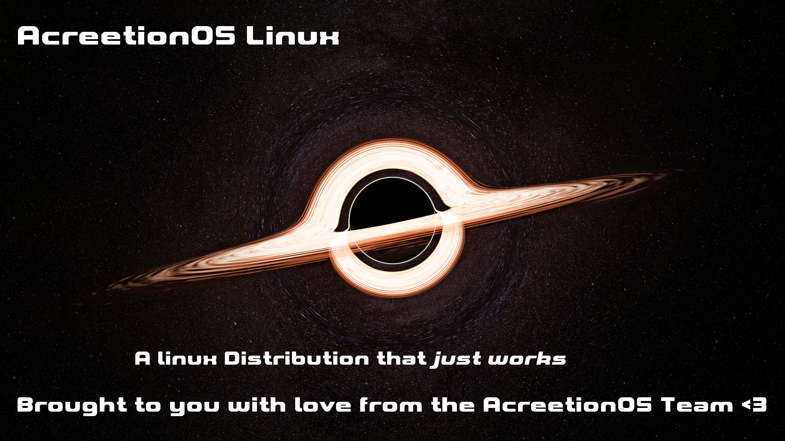

/\
/ \
/`'.,\
/ ,'.\
/ ,.' \
/ ,.' \
/ ,.' \
`""` `""`
AcreetionOS is an approachable and user-friendly distribution based on the powerful Arch Linux core. We aim to make the Arch ecosystem accessible to a wider audience by providing a stable, pre-configured desktop experience.
This project is made possible by the incredible work of the Arch Linux developers. We simply add a layer of convenience and testing to an already fantastic base.